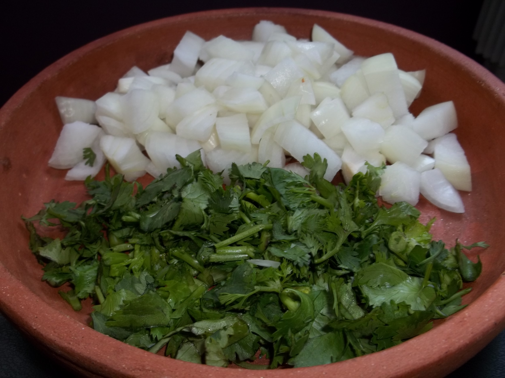
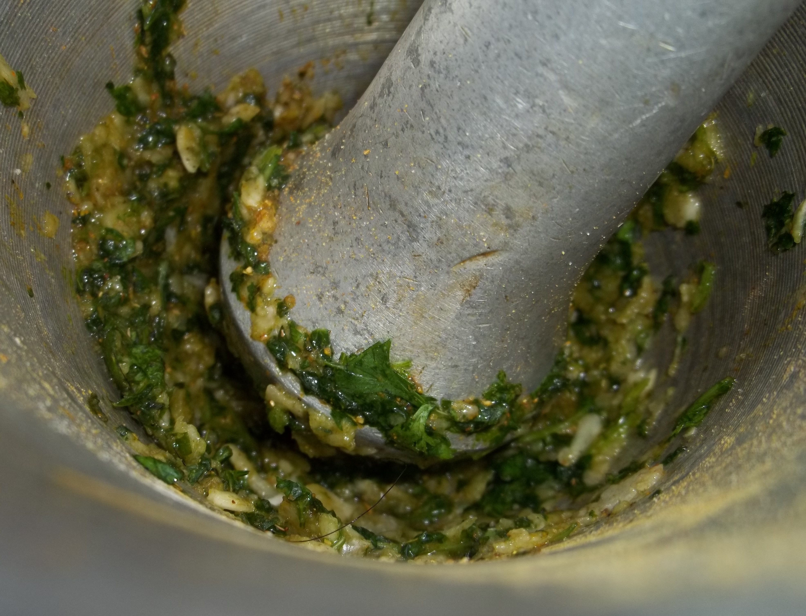
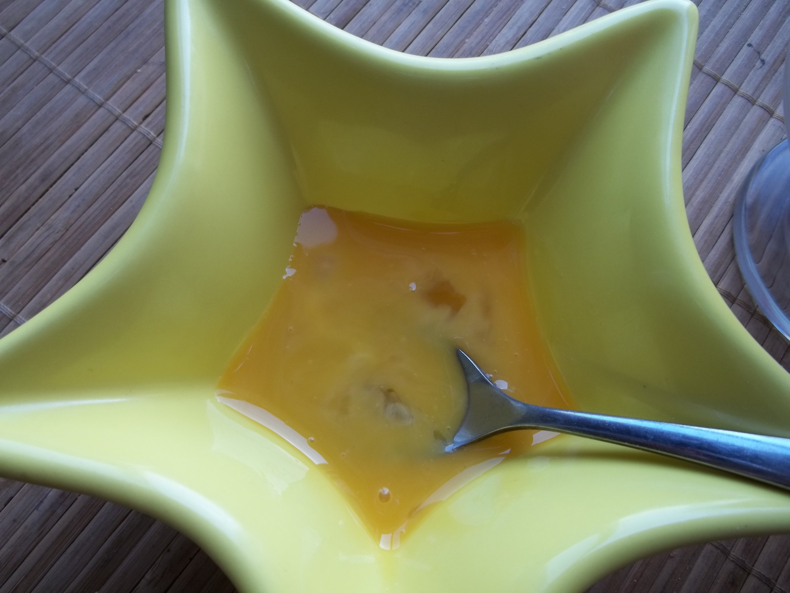

LOBIO (GEORGIAN BEAN DISH)
Lobio (Georgian: ლობიო), is a popular dish made with kidney beans and usually eaten with Mchadi and marinaded vegetables . The Georgian word ‘lobio’ means ‘beans’. There are a number of varieties of this dish and we will show how to make one of the most popular.
Ingredients
400 grams of dried red kidney beans.
100 grams of onions. 50 grams of fresh green coriander (optional), 2 cloves of garlic, salt, a pinch of dried coriander, half spoon of dried Blue Fenugreek, 3 bay leaves, 1 tsp black pepper and 70 grams of oil.
Preparation
Soak beans in cold water for two hours prior to cooking. Drain water and add beans, bay leaves and salt to a deep pot containing 1.5 liters of water. Cook on a medium heat until the beans are tender.
Chop the fresh coriander and onions.

Add fresh and dried coriander, Blue Fenugreek, garlic, black pepper and a pinch of salt to a mortar.
Grind the ingredients with a pestle.

Fry the chopped onions in a pan of hot oil.
Drain the water from the cooked kidney beans but keep 200 milliliters in a separate jug to use later. Use the back of a wooden spoon to mash the beans on the side of the pot. Add the ingredients that were crushed in a mortar, together with fried onions and the oil they were fried in.
Mash all ingredients until completely mixed, add the 200 milliliters of bean water (saved when draining the beans). Transfer the ingredients to a pot and cook on a medium heat for 4-5 minutes, stirring occasionally. Recommended to bake it in individual clay pots in the oven.
Serving
Serve hot. Recommended to serve in individual clay pots with the traditional accompaniment, Mchadi (Georgian Cornbread).
ACHARULI – ADJARIAN KHACHAPURI
Khachapuri (Georgian: ხაჭაპური), is a filled bread stuffed with melting cheese. It is justifiably considered to be one of Georgia’s most famous national dishes.
In this article we will show how to make Acharuli (Georgian: აჭარული ხაჭაპური) from Adjara, in which the dough is formed into an open gondola shape and is topped with a raw egg and butter before serving.

Ingredients
200 grams of khachapuri dough and up to 100 grams of flour.
3 eggs, 20 grams of butter and 100 grams of Sulguni cheese and 100 grams of Imeretian cheese (alternatively, you can use only imeretian cheese or mozzarella).
Preparation
Grate the cheese.
Add the grated cheese, one egg and butter to a mixing bowl.
Mix the ingredients with a fork.
Separate one egg yolk and stir in a dish. This will be used later to glaze the khachapuri.

Knead the dough before using. Leave for 10 minutes and then make a flattish boat shape, like in the picture below.
Spread the cheese filling onto the middle of the dough.
Fold the sides and ends of the dough, like in the picture below.
Lightly dust a baking tray with flour (to stop the khachapuri sticking) and put the khachapuri in a pre-heated hot oven for about 12 minutes at a high temperature.
After 12 minutes take out the khachapuri, glaze the surface with the egg yolk and add a raw egg to the cheese.
Bake for 3 minutes at a high temperature.

Serving
The Ajarian khachapuri is served hot and traditionally served with butter. The butter and egg are mixed together with a knife and fork and eaten together with little pieces of the bread part of the khachapuri.